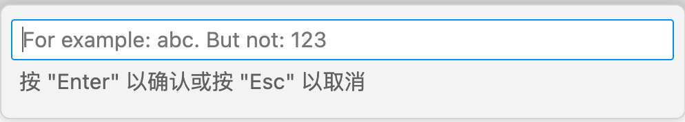
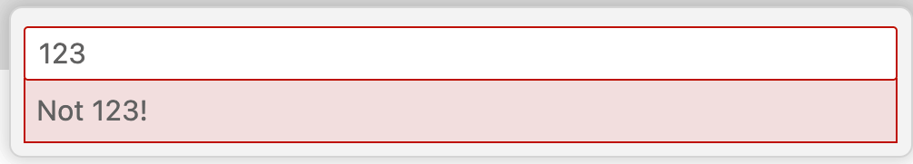
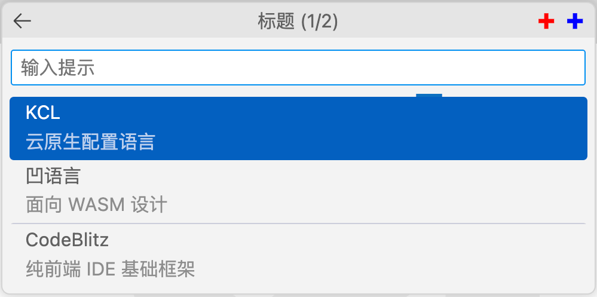

3.4 常用输入框
输入信息是软件和人交换的必要手段，通过界面可以极大改进用户的输入体验。本节讨论常用输入框的使用。
3.4.1 列表输入框
最简单的是列表输入框，在2.3.5节我们已经见过Task的配置输入参数采用的列表输入的方式。列表可以通过vscode.window.showQuickPick()函数实现，其签名如下：
interface QuickPickOptions {
title?: string;
placeHolder?: string;
onDidSelectItem?(item: QuickPickItem | string): any;
// 其他省略
}
function showQuickPick(
items: readonly string[],
options?: QuickPickOptions
): Thenable<string>;
第一个参数是列表选项，第二个参数是QuickPickOptions类型表示输入框的各种配置。配置中比较常用的有title标题、placeHolder输入提示和onDidSelectItem切换选择时的回调函数等。
下面是一个例子：
function activate(context) {
context.subscriptions.push(
vscode.commands.registerCommand('extdev.showQuickPick', () => {
vscode.window.showQuickPick(
['KCL', '凹语言', 'CodeBlitz'],
{
placeHolder: 'KCL, 凹语言 or CodeBlitz',
onDidSelectItem: item =>
vscode.window.showInformationMessage(
`焦点切换: ${item}`
)
}
).then((result) => {
vscode.window.showInformationMessage(`选中: ${result}`);
});
})
);
}
显示效果如下：

3.4.2 通用输入框
列表适合有固定选择的输入项。如果是更普通的输入，可以用vscode.window.showInputBox()函数，其函数签名如下：
interface InputBoxOptions {
title?: string;
value?: string;
placeHolder?: string;
password?: boolean;
validateInput?(value: string): string;
// 其他省略
}
function showInputBox(options?: InputBoxOptions): Thenable<string>;
因为没有后续列表项，参数主要是InputBoxOptions配置信息，其标题、默认值和提示信息等基础内容和QuickPickOptions相似。但是输入框不仅仅可以设置密码输入模式，还可以通过validateInput函数验证输入的合法性。
下面是一个例子：
function activate(context) {
context.subscriptions.push(
vscode.commands.registerCommand('extdev.showInputBox', () => {
vscode.window.showInputBox({
value: 'abc',
placeHolder: 'For example: abc. But not: 123',
validateInput: text => {
vscode.window.showInformationMessage(`Validating: ${text}`);
return text === '123' ? 'Not 123!' : null;
}
}).then((result) => {
vscode.window.showInformationMessage(`Got: ${result}`);
});
})
);
}
显示效果如下：

遇到无效的输入：

3.4.3 认识 QuickInput 对象
showQuickPick和showInputBox都属于包装的用户更友好的API，但是缺乏一定的灵活性。他们底层都是通过createQuickPick个createInputBox两个函数实现，返回的是QuickPick和InputBox对象，这两个对象的基类都是QuickInput对象。QuickInput对象的定义如下：
interface QuickInput {
title: string | undefined; // An optional title.
step: number | undefined; // An optional current step count.
totalSteps: number | undefined; // An optional total step count.
// If the UI should allow for user input. Defaults to true.
enabled: boolean;
// If the UI should show a progress indicator. Defaults to false.
busy: boolean;
// If the UI should stay open even when loosing UI focus. Defaults to false.
ignoreFocusOut: boolean;
show(): void;
hide(): void;
onDidHide: Event<void>;
dispose(): void;
}
属性部分主要有title标题信息和step、totalSteps表示的第几步骤等信息。方法部分主要是显示和隐藏控制、隐藏时的回调函数和释放资源。
下面是派生出来的QuickPick和InputBox对象：
interface QuickPick<T extends QuickPickItem> extends QuickInput {
// Current value of the filter text.
value: string;
// Optional placeholder shown in the filter textbox when no filter
// has been entered.
placeholder: string | undefined;
// Items to pick from. This can be read and updated by the extension.
items: readonly T[];
// An event signaling when the selected items have changed.
readonly onDidChangeSelection: Event<readonly T[]>;
// 更多信息暂省略
}
interface InputBox extends QuickInput {
// Current input value.
value: string;
// Optional placeholder shown when no value has been input.
placeholder: string | undefined;
// If the input value should be hidden. Defaults to false.
password: boolean;
// An event signaling when the value has changed.
readonly onDidChangeValue: Event<string>;
// An event signaling when the user indicated acceptance of the input value.
readonly onDidAccept: Event<void>;
// 更多信息暂省略
}
QuickInput无法直接创建，只能创建派生的QuickPick和InputBox对象：
function createQuickPick<T extends QuickPickItem>(): QuickPick<T>;
function createInputBox(): InputBox;
我们以QuickPick为例展示如何用底层API创建，首先是封装一个myShowQuickPick函数：
/**
* @param {string[]} items
* @returns vscode.Thenable<string|undefined>
*/
function myShowQuickPick(items) {
const quickPick = vscode.window.createQuickPick();
quickPick.items = items.map(label => ({label}));
quickPick.show();
return Promise.race([
new Promise(c => quickPick.onDidChangeSelection((selection) => {
if (selection[0]) {
c(selection[0].label);
} else {
c(undefined);
}
quickPick.hide();
})),
new Promise(c => quickPick.onDidAccept(() => {
c(quickPick.value);
quickPick.hide();
})),
new Promise(c => quickPick.onDidHide(() => {
c(undefined);
}))
]);
}
其中比较关键的地方是返回一个Promise对象，其中包含了onDidChangeSelection表示点列表项输入、onDidAccept表示点键盘输入和窗口隐藏任何一种输入形式的结果。
下面是通过命令使用myShowQuickPick例子的效果：
/** @param {vscode.ExtensionContext} context */
function activate(context) {
context.subscriptions.push(
vscode.commands.registerCommand('extdev.createQuickPick', () => {
myShowQuickPick(
['KCL', '凹语言', 'CodeBlitz']
).then(result => {
vscode.window.showInformationMessage(`result: ${result}`);
});
})
);
}
这样就可以跟着特定的需要封装功能，同时达到类似vscode.window.showQuickPick()易用性。
3.4.4 QuickPick 输入框定制
QuickPick 输入框内置了很多功能，下面是一个效果图：

首先首先通过scode.window.createQuickPick()函数创建并显示：
function activate(context) {
const quickPick = vscode.window.createQuickPick();
quickPick.show();
...
}
然后设置标题、总步骤数、输入提示和忙碌状态：
quickPick.title = "标题";
quickPick.step = 1; // 从 1 开始
quickPick.totalSteps = 2;
// 输入的值为空时显示
quickPick.placeholder = "输入提示";
// 会出现一个处理或加载的动画, 其他不影响
quickPick.busy = true;
定制左边是会退按钮，右边是自定义按钮：
/** @type {vscode.QuickInputButton} */
const btnRedAdd = {
"iconPath":vscode.Uri.file(context.asAbsolutePath('icon-add-red.svg')),
"tooltip": "红色图标"
};
/** @type {vscode.QuickInputButton} */
const btnBlueAdd = {
"iconPath": vscode.Uri.file(context.asAbsolutePath('icon-add-blue.svg')),
"tooltip": "蓝色图标"
};
quickPick.buttons = [
vscode.QuickInputButtons.Back,
btnRedAdd, btnBlueAdd
];
然后是下拉列表项，包含分组分割线：
// 下拉列表, 依然可以手工输入
quickPick.items = [
{'label': 'KCL', 'detail':'云原生配置语言'},
{'label': '凹语言', 'detail':'面向 WASM 设计'},
{kind: vscode.QuickPickItemKind.Separator}, // 分隔符
{'label': 'CodeBlitz', 'detail':'纯前端 IDE 基础框架'}
];
然后是设置必要的消息处理函数后，就可以运行了。
3.4.5 小结
本节讨论的QuickInput输入框是定制性比较强的输入UI组件，可以容易实现多步骤输入等深度定制的特性，用户可以根据自己需要同时借鉴社区场景的代码方式再自行探索。